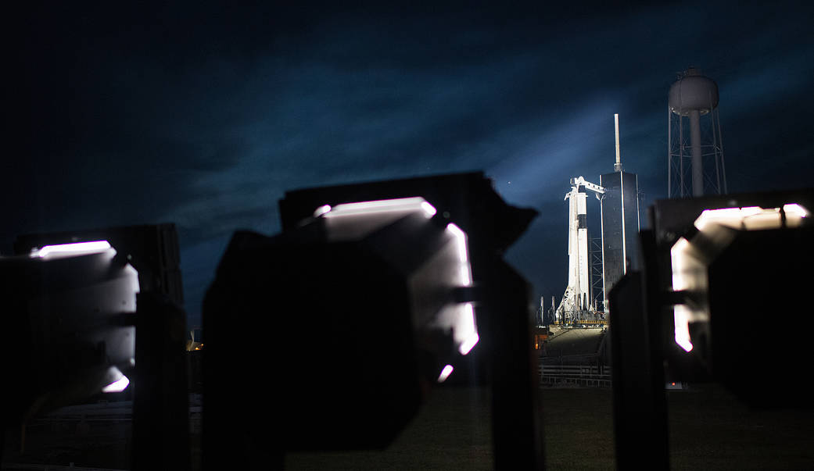
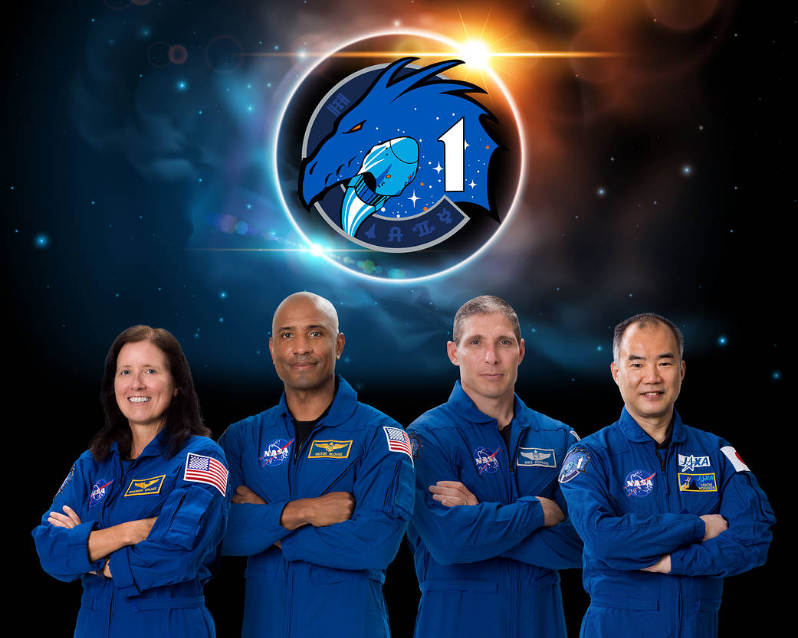

Dimostrato
Trasporto umano, attracco e ritorno, con capsule riutilizzate.
Veicoli · Scheda tecnica 07
La capsula abitabile che collega Falcon 9, equipaggio e missione orbitale. Il ritorno e la sicurezza richiedono sistemi e prove propri, oltre al lanciatore.
Stato al 10 ottobre 2026: Operativo
Leggi i dati Controlla le fonti
Riferimento: documenti citati a fondo pagina, letti con le rispettive date. Stato editoriale al 10 ottobre 2026.
La capsula dispone di controllo orbitale, supporto vitale, comunicazioni e sistemi di fuga. Il trunk sostiene funzioni del volo, ma viene separato prima del rientro; a terra torna la capsula.
Demo-1 provò il sistema senza equipaggio; Demo-2 portò due astronauti. La configurazione, le missioni private e le successive rotazioni NASA vanno lette separatamente, senza dedurre il numero di sedili dal singolo equipaggio.
Un lancio riuscito non chiude la missione: attracco, permanenza, rientro e meteo del recupero restano vincoli. Il servizio NASA certificato non qualifica automaticamente ogni nuova missione privata.
Trasporto umano, attracco e ritorno, con capsule riutilizzate.
Sistemi e operazioni definiti per i profili di missione approvati.
Affidabilità e margini devono essere valutati lungo l’intera missione.

Consultazione editoriale: 10 ottobre 2026. Le date dei singoli documenti sono distinte dalla data della scheda.